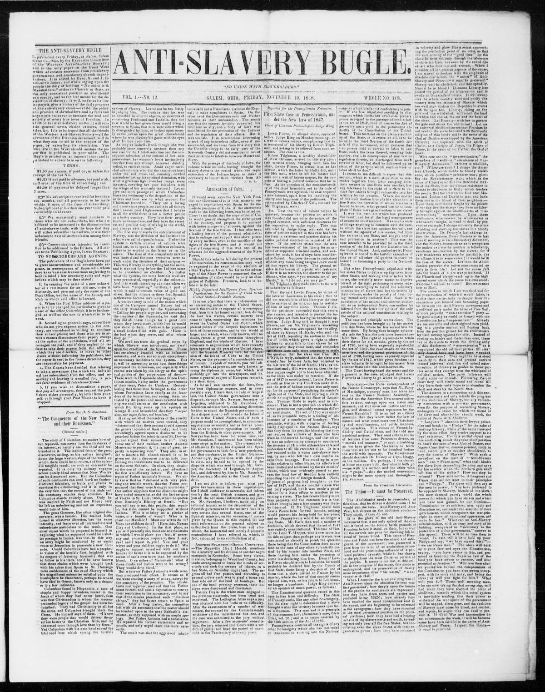

Domingo were emblematic of the cruel Slavery which his magnificent enterprise
https://www.loc.gov/resource/sn83035487/1848-11-10/ed-1/?sp=1

See the original pageVer la página original
Based on the provided excerpt, the newspaper reflects critically on Christopher Columbus, stating that the chains brought back with his ashes from Spain to St. Domingo were emblematic of the cruel slavery his enterprise entailed upon the hemisphere. It describes the indigenous people of Hispaniola as simple and happy islanders whom Columbus initially found and claimed could be converted through love rather than force, yet asserts that Columbus sowed the fatal seed from which a horrible system of slavery sprang. Additionally, the text addresses labor and subsistence questions regarding the state or republic, arguing that people, their wives, and their children ought to support themselves with their own hands rather than rely on the labor of Indians.
Partiendo de las líneas extractadas, el periódico formula un juicio severo sobre Cristóbal Colón, aduciendo que las cadenas trasladadas con sus cenizas desde España a Santo Domingo simbolizaban la despiadada servidumbre que su empresa acarreó al continente. Retrata a los aborígenes de La Española como isleños sencillos y venturosos que Colón halló en un principio, aseverando que podían ganarse por el afecto y no por el rigor, aunque imputa a Colón el haber sembrado el germen funesto del cual brotó un atroz sistema de esclavitud. Asimismo, el texto ventila cuestiones de trabajo y subsistencia cívica, sosteniendo que los hombres, sus consortes e hijos deben procurarse el sustento con el propio esfuerzo de sus manos antes que depender del sudor indígena.
Where this standsEn qué punto está
The full text of this article is still being prepared. Until it is ready, this page carries a summary, the passage found on the page, and the link to the original, which is always one click away.El texto completo de este artículo aún se está preparando. Hasta que esté listo, esta página lleva un resumen, el pasaje encontrado en la página y el enlace al original, que siempre está a un clic.
The passage this summary was written fromEl pasaje del que se escribió este resumen
The passage where this article was found, copied from the newspaper page itself, reading errors and all. This is exactly what the summary above is based on.El pasaje donde se encontró este artículo, copiado de la propia página del periódico, con sus errores de lectura y todo. Esto es exactamente aquello en lo que se basa el resumen de arriba.
to follow in his track, could he have known
that those chains wnicn were orougni oacx
with his ashes from Spain lo Si. Domingo
were emblematic of the cruel Slavery which
his magnificent enterprise entailed upon
hemisphere he discovered, perhaps he would
have died in Genoa, known only as a dream
er to a few intimate.
Columbus found in Hispaniola, a race
simple and happy islanders, nearer lo
Jetus of whom they had never heard, than
was that Christendom to whom the unconi-
prehended legacy ot the gospel na oeeri De-
queathed. They had Christianity in all
the name, and iotumous orougu. mem
He himself say of them. "I knew
they were people that would deliver them-
i it., fhrtalian fallh. Ann
BciTBi urnti .u w
converted more througn love man uy lorce.
Yet Uolumbu witn ins own nail" iutu
fjtal seed from which sprang ihe horrible
ANTI-SLAVERY
VOL. 1. X0. 12.
.v r.vo.v trim
SALEM. OHIO, ritWAY,
swtrEiiot.nnns
Kl-VmiiHi 10, 1818.
U
0
WHOLE NO. 1(8.
of
to
in
i you win say io me, mis people, mm ropuu-
lie, this stale, cannot be supported without
j Indians. Who is lo bring us a piicher
j water, or a bundle of wood 1 Who ia
plant our Mandioc 1 Must our wives do it?
Must our children do it I (Here this, Messrs
(jiay am Calhoun.) In the first place,
in yOU will presently see, these are not the straits
y w hich 1 would place you but, if neces
ter 6jlv u conscience require it, then I say,
ye8i and I repeat it, yes You and your
w-ives and your children ought to do it We
ought lo support outselves with our own
hands for belter it is to be supported by the
How to cite this articleCómo citar este artículo
Anti-Slavery Bugle. (1848). New-Lisbon, Ohio, November 10, 184810 de noviembre de 1848. DR in the American PressRD en la Prensa Norteamericana. Library of Congress, Chronicling America: https://www.loc.gov/resource/sn83035487/1848-11-10/ed-1/?sp=1
ReferencesReferencias
Library of Congress, Chronicling America: Anti-Slavery Bugle, November 10, 184810 de noviembre de 1848.
Send an observationEnviar una observación
Does this article connect with your family, your town, or something you know? Did we get something wrong? Write to us. Observations go to the editor's inbox and are read by a person.¿Este artículo conecta con su familia, su pueblo o algo que usted conoce? ¿Nos equivocamos en algo? Escríbanos. Las observaciones llegan al buzón del editor y las lee una persona.
Send observationEnviar observación